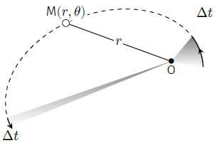

Moments
Moment d’une force
Définitions
Considérons une force \(\overrightarrow{f}\) qui s’applique en un point \(M\).
Le moment d’une force s’exprime en \(\rm{N.m}\).
On obtient le moment en un point \(A\) à partir de celui calculé en un autre point \(B\) par
la relation :
$$
\quad \boxed{ \overrightarrow{\mathcal{M}_A}\left(\overrightarrow{f}\right)
= \overrightarrow{\mathcal{M}_B}\left(\overrightarrow{f}\right)
+ \overrightarrow{AB} \wedge \overrightarrow{f} }
$$
Notion de bras de levier
Il arrive souvent que toutes les forces soient dans un même plan. Dans ce cas, si l’on
considère un point \(A\) de ce plan, tous les moments de force en \(A\) sont
perpendiculaires à ce plan ; il est alors naturel d’utiliser des projections.
Soit \(\overrightarrow{u}\) le vecteur unitaire orientant un axe \((\Delta)\) passant par un
point \(A\).
Ce nombre est indépendant de la position de \(A\) sur l’axe. En effet, pour un autre point
\(A'\) sur l’axe, on a :
$$
\quad \overrightarrow{\mathcal{M}_A}\left(\overrightarrow{f}\right)\cdot\overrightarrow{u}
= \overrightarrow{\mathcal{M}_{A'}}\left(\overrightarrow{f}\right)\cdot\overrightarrow{u}
+ \left( \overrightarrow{AA'} \wedge \overrightarrow{f} \right) \cdot \overrightarrow{u}
= \overrightarrow{\mathcal{M}_{A'}}\left(\overrightarrow{f}\right)\cdot\overrightarrow{u}
$$
puisque \(\overrightarrow{AA'}\) est colinéaire à \(\overrightarrow{u}\).
Considérons maintenant une force \(\overrightarrow{f}\) dans un plan \(\mathcal{P}\) et un
axe orienté \((\Delta)\) perpendiculaire à \(\mathcal{P}\).
Notion de bras de levier.
Moment d’une force par rapport à un axe \((\Delta)\) :
Moment cinétique
Considérons un point matériel \(M\) de masse \(m\), animé d’une vitesse
\(\overrightarrow{v_{M/\mathcal{R}}}\) par rapport à un référentiel \(\mathcal{R}\).moment cinétique de \(M\) en un point \(A\) est le
vecteur :
$$
\quad \boxed{ \overrightarrow{L_A}(M) \overset{def}{=}
\overrightarrow{AM} \wedge m \overrightarrow{v_{M/\mathcal{R}}}
= \overrightarrow{AM} \wedge \overrightarrow{p} }
$$
Ce vecteur, comme tous les moments, vérifie la relation :
$$
\quad \overrightarrow{L_A}(M) = \overrightarrow{L_B}(M) +
\overrightarrow{AB} \wedge \overrightarrow{p}
$$
On définit également le moment cinétique par rapport à un axe.
Théorème du moment cinétique
Le théorème du moment cinétique découle directement du principe fondamental de la dynamique
et ne possède donc pas plus d’information. Dans le cas des systèmes conservatifs à force
centrale, il permet de dégager une seconde intégrale première qui s’interprète de façon
géométrique.
Considérons un point matériel \(M\) de masse \(m\) en mouvement dans un référentiel galiléen
\(\mathcal{R}\) et soumis à une force \(\overrightarrow{f}\).
Théorème du moment cinétique (TMC) :
En projetant cette relation suivant un axe fixe orienté \((\Delta)\), on obtient :
$$
\quad \boxed{ \frac{\mathrm{d}L_{\Delta}(M)}{\mathrm{d}t} =
\mathcal{M}_{\Delta}\left(\overrightarrow{f}\right) }
$$
Applications
Mouvement à forces centrales
Une force est dite centrale de centre \(O\) quand, à chaque instant, la droite support de
cette force passe par un point fixe \(O\). Si l’on considère un système de coordonnées
sphériques d’origine \(O\), un champ de force centrale s’écrit :
$$
\quad \overrightarrow{f}(M) = f(r,\theta,\varphi) \overrightarrow{u_r}
$$
Par exemple, dans le référentiel géocentrique, la force de gravitation produite par la Terre
sur un satellite artificiel est une force centrale à condition de supposer la Terre à
symétrie sphérique.
Le théorème du moment cinétique appliqué à point matériel \(M\) soumis à une force centrale
dans un référentiel galiléen donne :
$$
\quad \frac{\mathrm{d} \overrightarrow{L_{O}}(M)}{\mathrm{d}t} =
r \overrightarrow{u_r} \wedge f(r,\theta,\varphi) \overrightarrow{u_r}
\quad \Rightarrow \quad \overrightarrow{L_{O}}(M) = C^{te}
$$
Ainsi, le moment cinétique se conserve en norme et en direction d’où l’on tire les trois
conséquences suivantes :
Le mouvement est plan. En effet, à chaque instant, le vecteur
\(\overrightarrow{OM}\) est orthogonal au vecteur constant
\(\overrightarrow{L_{O}}(M)\).
Le mouvement étant plan, on utilise les coordonnées polaires pour repérer la position
de \(M\). Le moment cinétique s’écrit \(r \overrightarrow{u_r} \wedge m
(\dot r \overrightarrow{u_r} + r \dot \theta \overrightarrow{u_\theta})\) et sa
conservation se traduit par
$$
\quad \boxed{ r^2 \dot \theta = C}
$$
où \(C\) est une constante appelée constante des aires.
L’aire balayée par le vecteur \(\overrightarrow{OM}\) par unité de temps est constante
et égale à \(C/2\) (vitesse aréolaire).

Loi des aires : pour des durées égales, l’aire balayée par le rayon
vecteur est la même.
Solide en équilibre
Considérons un solide \(\mathcal{S}\) en équilibre dans un référentiel \(\mathcal{R}\)
galiléen.
Dans le cas où seules deux forces s’appliquent en deux points \(A\) et \(B\) d’un solide, la
condition d’équilibre traduit le fait que ces deux forces forment un couple de moment nulle
ce qui signifie que ces deux forces sont opposées et coaxiales.
Dans le cas d’un solide soumis à trois forces non parallèles, deux d’entre elles ont
nécessairement leur prolongement qui se coupent en un point \(A\). Le système d’action est
alors équivalent à deux forces s’appliquant en \(A\). On se ramène au cas précédent où l’on
a vu que l’équilibre impliquait que les deux forces sont coaxiales. En d’autres termes les
trois forces sont concourantes en A.
Solide soumis à trois forces
Solide en rotation autour d’un axe fixe
Supposons un solide \(\mathcal{S}\) en rotation autour d’un axe fixe orienté \((\Delta)\) à
la vitesse angulaire \(\omega\) (\(\omega\gt 0\) si le solide tourne dans le sens positif).
Chaque point \(Mùëñ_i\) de masse \(m_i\) constituant le solide d√©crit un cercle de rayon
\(H_iM_i= r_i\) où \(H_i\) est la projection de \(M_i\) sur l’axe \((\Delta)\). Leur
moment cinétique par rapport à l’axe vaut donc
$$
\quad L_{\Delta}(M_i) = m_iv_ir_i = m_ir_i^2\omega
$$
Par conséquent, le solide \(\mathcal{S}\) possède un moment cinétique
$$
\quad L_{\Delta}(\mathcal{S}) = I_{\Delta}\omega
$$
avec
$$
\quad I_{\Delta} = \sum_{i} m_ir_i^2
$$
où \(I_{\Delta}\)désigne le moment d’inertie du solide par rapport à l’axe. Le moment
cinétique est donc proportionnel à la vitesse angulaire et au moment d’inertie qui dépend
non seulement de la masse totale mais aussi de sa répartition autour de l’axe de rotation.
Ainsi, en vertu du théorème du moment cinétique, le mouvement de rotation d’un solide
autour d’un axe fixe est régi par l’équation :
$$
\quad \boxed{I_{\Delta}\frac{\mathrm{d}\omega}{\mathrm{d}t}=\mathcal{M}_{\Delta}^{ext}}
$$